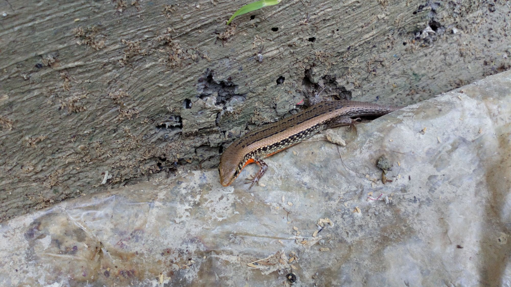
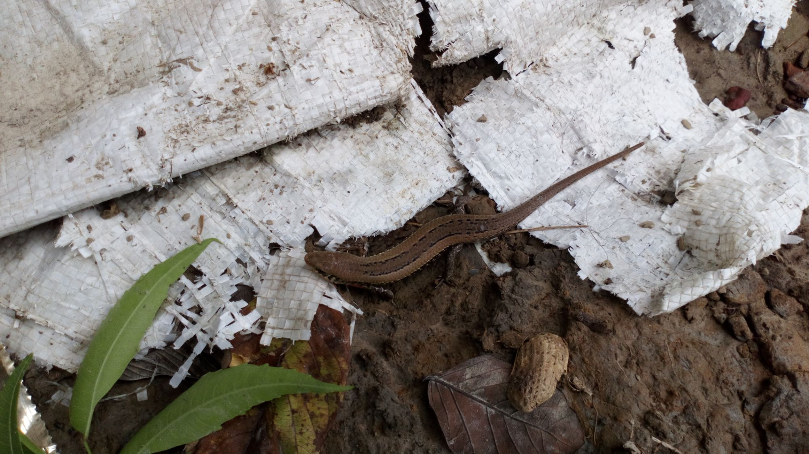
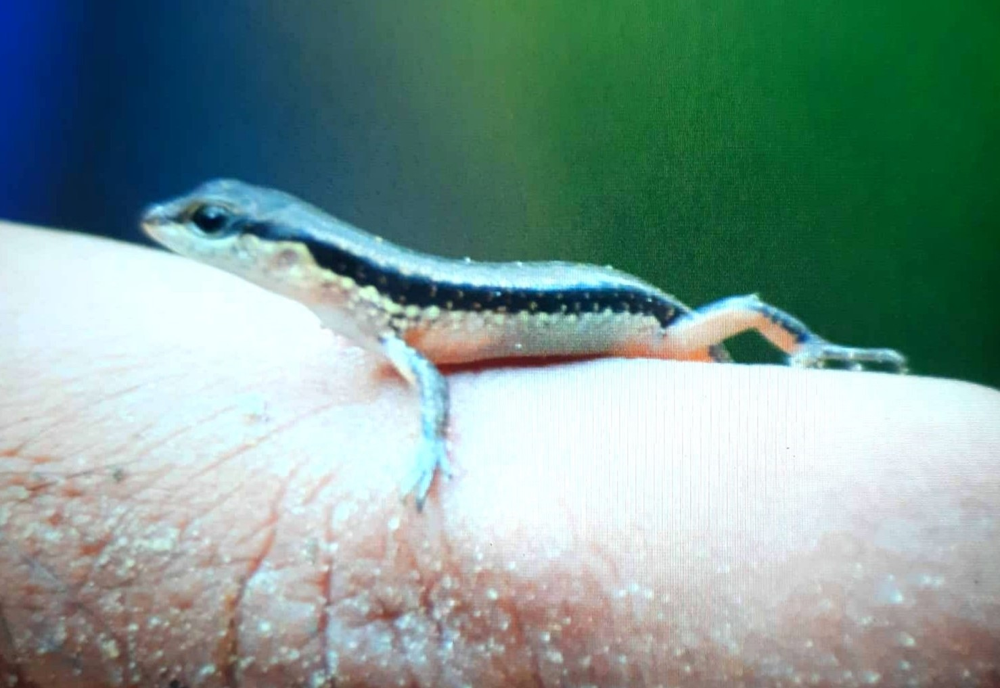

| Class | Order | Family |
|---|---|---|
| Reptilia | Squamata | Scincidae |
It is a medium-sized skink consisting a short and pointed snout. The dorsal part of the body is bronze brown to dark brown with two series of small black spots. The dorsal scales are comparatively large and smooth. A dark band with small white spots presents at both side of the body. The ventral part is off-white and turns yellowish in breeding male
এটি একটি মাঝারি আকারের অঞ্জন। এদের মাথাটি ছোট এবং ছুঁচালো । শরীরের পৃষ্ঠীয় অংশটি তামাটে বাদামী থেকে গাঢ় বাদামী রঙের এবং পিঠে দুটি ছোট কালো দাগের সিরিজ থাকে। পিঠের আঁইশ তুলনামূলকভাবে বড় এবং মসৃণ। শরীরের উভয় পাশে ছোট সাদা দাগ সহ একটি গাঢ় ব্যান্ড থাকে। পেটের অংশ হলদেটে-সাদা এবং প্রজননকারী পুরুষের ক্ষেত্রে হলুদাভ হয়ে যায়।
In mixed evergreen and deciduous forests, it prefers damp forest floors with leaf litter. The species is terrestrial and feeds on grasshoppers, spiders, and crickets, among other ground insects. It is an oviparous species, with the female laying 4-5 eggs in a single clutch.
এরা মিশ্র চিরহরিৎ এবং পর্ণমোচী বনে, পাতার আবর্জনা ও স্যাঁতসেঁতে বনের মেঝে পছন্দ করে। প্রজাতিটি স্থলজ এবং অন্যান্য স্থল পোকামাকড়ের মধ্যে ঘাসফড়িং, মাকড়সা এবং ঝিঁঝি পোকা খায়। এরা ডিম দায় (oviparous), স্ত্রী ৪-৫ টি ডিম পাড়ে।
China, Nepal, Bhutan, India, Bangladesh, Myanmar, Cambodia, N Thailand, Vietnam, Sunda region, Peninsular Malaysia, New Guinea.
চীন, নেপাল, ভুটান, ভারত, বাংলাদেশ, মায়ানমার, কম্বোডিয়া, থাইল্যান্ড, ভিয়েতনাম, সুন্দা অঞ্চল, উপদ্বীপ মালয়েশিয়া, নিউ গিনি।
In Bangladesh, the species is found in Chittagong division, Sylhet division, Madhupur National Park, Tangail and Rajshahi.
বাংলাদেশে, প্রজাতিটি চট্টগ্রাম বিভাগ, সিলেট বিভাগ, মধুপুর জাতীয় উদ্যান, টাঙ্গাইল এবং রাজশাহীতে পাওয়া যায়।